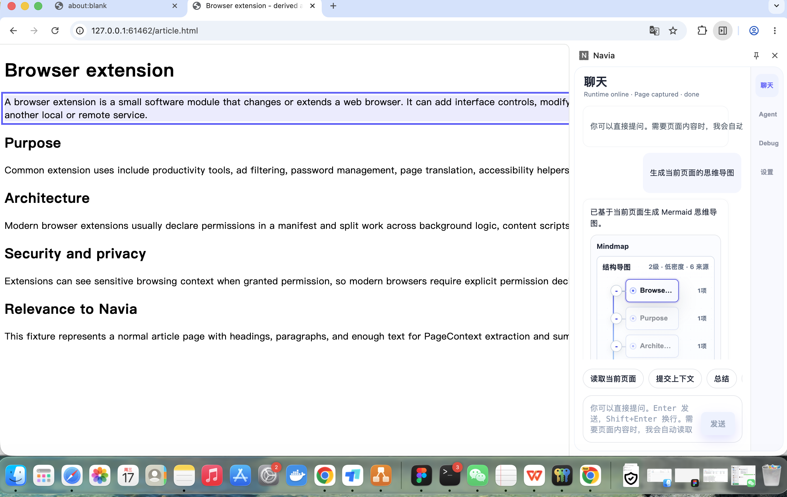
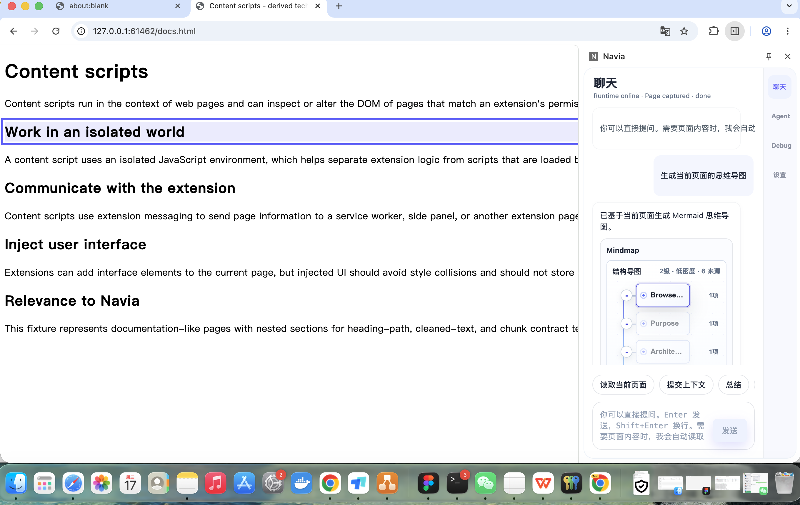
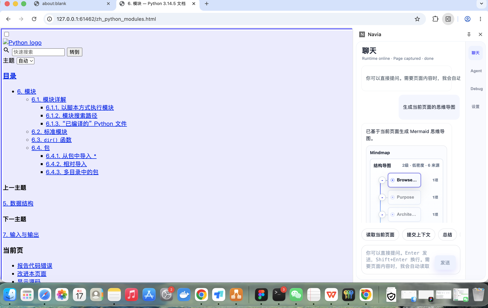
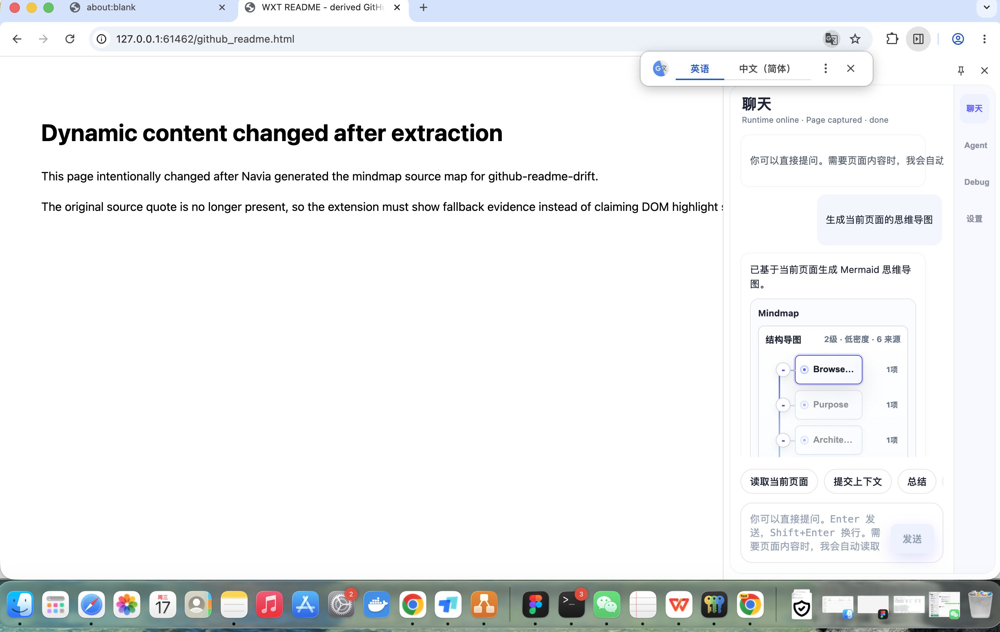
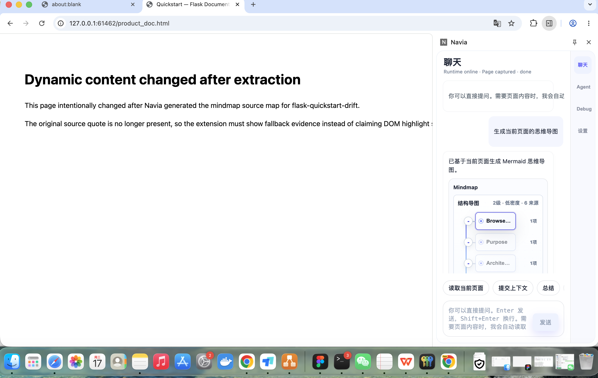

目标架构与当前实现
目标链路：A 页面感知 -> C digest-first Mindmap -> D Artifact/Event/Trace -> B Evidence Card Mindmap -> 用户触发 source panel / jumpback / fallback。
本报告只证明 V1.3 Mindmap 体验升级，不声明完整 V1、Canvas Knowledge Map、RAG、Memory、Web Research、PPT 或 Deep Research ready。
验收摘要
页面矩阵8/8
原生 Side Panel 截图5
Evidence Card 样本5
Fallback 样本2
V1.3 报告结构、页面矩阵和截图样本满足当前门槛。
用户体验截图证据





8 页验收矩阵
| 页面 | 类别 | 风险 | Evidence Card | Source Panel | 结论 |
|---|---|---|---|---|---|
zh_001_python_tutorial_indexhttps://docs.python.org/zh-cn/3/tutorial/index.html |
chinese_complex | normal | fail | fail | pass |
zh_002_python_tutorial_introhttps://docs.python.org/zh-cn/3/tutorial/introduction.html |
chinese_complex | long_text | fail | fail | pass |
zh_003_python_tutorial_controlflowhttps://docs.python.org/zh-cn/3/tutorial/controlflow.html |
chinese_complex | duplicate_labels | fail | fail | pass |
tech_002_python_tutorial_introhttps://docs.python.org/3/tutorial/introduction.html |
technical_doc | missing_source | fail | fail | pass |
tech_003_python_tutorial_controlflowhttps://docs.python.org/3/tutorial/controlflow.html |
technical_doc | normal | fail | fail | pass |
github_002_pallets_flaskhttps://raw.githubusercontent.com/pallets/flask/main/README.md |
github_readme | normal | fail | fail | pass |
github_003_django_djangohttps://raw.githubusercontent.com/django/django/main/README.rst |
github_readme | normal | fail | fail | pass |
blog_001_pep_0008https://peps.python.org/pep-0008/ |
long_article | normal | fail | fail | pass |
测试命令
| 命令 | 状态 | 证据 |
|---|---|---|
npm run e2e:chrome:jumpback-closeout | pass | docs/active/project/evidence/v1_3_evidence_card_mindmap/native-run/report.json |
npm --prefix apps/chrome-extension test -- mindmap_renderer chat_renderer/tests/ArtifactInlineCard.test.tsx chat_renderer/tests/chatPresentation.test.ts | pass | |
npm --prefix apps/chrome-extension run typecheck | pass |